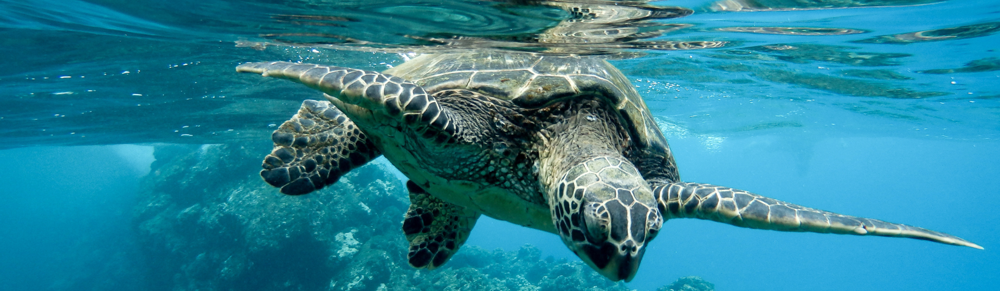
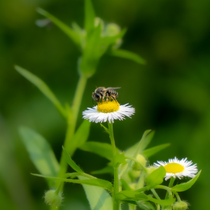

BIODIVERSIDADE
A biodiversidade é essencial para a saúde e o equilíbrio dos ecossistemas, garantindo a sobrevivência de todas as formas de vida.
A biodiversidade é um termo que se refere à variedade de vida existente em nosso planeta, incluindo toda a diversidade de espécies vegetais, animais, microorganismos e seus habitats. Trata-se de um dos aspectos mais importantes da natureza, desempenhando um papel fundamental na manutenção dos ecossistemas saudáveis e no equilíbrio do meio ambiente.
A biodiversidade é responsável por uma série de serviços ecossistêmicos essenciais para a vida no planeta. Por exemplo, as plantas são fundamentais na produção de oxigênio e na regulação do clima, além de fornecerem alimentos e abrigarem diversas espécies de animais. Os animais, por sua vez, são importantes para a polinização das plantas, para o controle de pragas e doenças, e para a manutenção dos ciclos de nutrientes nos ecossistemas.
No entanto, a biodiversidade está enfrentando sérios desafios devido às atividades humanas, como desmatamento, poluição, introdução de espécies exóticas, exploração excessiva de recursos naturais e mudanças climáticas. A perda de biodiversidade traz consequências negativas para a sustentabilidade do planeta, afetando desde a segurança alimentar até a disponibilidade de água limpa e a estabilidade dos ecossistemas.
Curiosidade: Você sabia que existem mais espécies de insetos conhecidas do que qualquer outro grupo de organismos? Estima-se que os insetos representem mais de dois terços de todas as espécies conhecidas no mundo. Além disso, eles desempenham papéis essenciais nos ecossistemas, como polinização, decomposição de matéria orgânica e controle de pragas. Os insetos são verdadeiros "engenheiros" e sua diversidade é crucial para a manutenção da biodiversidade global.